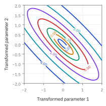
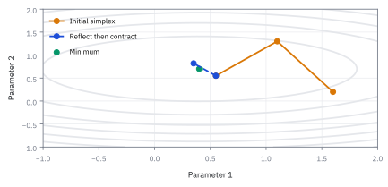
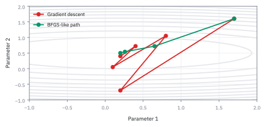
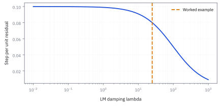
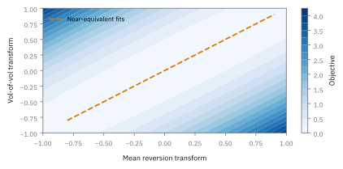

21.2 Multivariate Optimizers for Calibration
เลือก parameter หลายตัวให้เข้าตลาดโดยวัด error, scale ก้าว และควบคุมการหยุด
Option 3 สัญญา มีราคา mid 12.70, 6.40, \$2.50 และ half-spread 0.20, 0.10, \$0.10 หากราคา model คือ 12.60, 6.50, \$2.48 เมื่อใช้ Levenberg-Marquardt (LM) damping 25 และ Jacobian 10I ก้าวนี้จะลด objective หรือไม่?
เฉลย: ก้าวนี้ทำให้ objective ลดลงจาก 0.645 เหลือ 0.0258 จึงยอมรับก้าวได้ โดยค่า residual ใหม่หดลงเหลือหนึ่งในห้าของเดิม
ศัพท์ที่ทำให้คำว่า calibrate มีความหมาย
- calibration
- การเลือก parameter ของ model ให้ราคาใกล้ quote ตลาดตามนิยาม error ที่ประกาศ ใช้สร้าง pricing engine ที่สอดคล้องกับข้อมูลวันนี้
- objective function
- function ที่รวมความผิดพลาดเป็นตัวเลขเดียว ใช้ให้ algorithm ตัดสินว่าจุดใดดีกว่าโดยไม่ใช้สายตา
- residual
- ราคา model ลบราคาเป้าหมายของ quote หนึ่งตัว ใช้บอกทิศและขนาดของความคลาดเคลื่อน
- Jacobian
- ตาราง derivative ของ residual ต่อ parameter แต่ละตัว ใช้คาดผลของก้าวเล็ก ๆ ต่อ quote ทุกตัว
- Hessian
- matrix ความโค้งอันดับสองของ objective ใช้บอกว่าหุบแคบหรือแบนและช่วยกำหนดก้าว
- Nelder–Mead
- วิธีที่ขยับ simplex ด้วยอันดับของ objective เท่านั้น ใช้เป็น derivative-free baseline เมื่อ gradient ไม่น่าเชื่อถือ
- Broyden Fletcher Goldfarb Shanno (BFGS)
- วิธี quasi-Newton ที่เรียนรู้ Hessian โดยประมาณจาก gradient ที่ผ่านมา ใช้เร่ง convergence โดยไม่คำนวณ second derivative จริง
- Levenberg Marquardt (LM)
- วิธี least-squares ที่เพิ่ม damping ให้ Gauss–Newton ใช้กันก้าวใหญ่เกินเมื่อ parameter ยังไกลคำตอบ
- Fast Fourier Transform (FFT)
- algorithm คำนวณ Discrete Fourier Transform อย่างรวดเร็ว ใช้คำนวณราคา option ทั้ง ladder หลาย strike พร้อมกันเพื่อลดเวลา reprice ในรอบ calibration
- QR factorization (QR)
- การแยก matrix ออกเป็น orthogonal และ upper-triangular matrix ใช้แก้ linear least-squares และระบบสมการก้าว Gauss–Newton อย่างมีเสถียรภาพโดยไม่ต้อง invert matrix ตรง ๆ
- singular value decomposition (SVD)
- การแยกองค์ประกอบ matrix ออกเป็น singular vector และ singular value ใช้ตรวจและแก้ปัญหาระบบสมการก้าวที่ ill-conditioned หรือ rank-deficient ใน multivariate optimization
- Root Mean Square Error (RMSE)
- รากที่สองของค่าเฉลี่ยความคลาดเคลื่อนกำลังสอง ใช้เป็นมาตรวัดมาตรฐานในการเปรียบเทียบระดับความแม่นยำระหว่างผลลัพธ์ของ optimizer แต่ละตัว
สัญลักษณ์และหน่วย
| สัญลักษณ์ | ความหมาย | หน่วย |
|---|---|---|
| $\theta$ | vector parameter ที่ calibrate | transformed units ตาม model |
| $P_i^{model},P_i^{mid}$ | ราคา model และราคากลางของ quote ลำดับ $i$ | USD ต่อหน่วยสัญญา |
| $h_i$ | half-spread ของ quote | USD ต่อหน่วยสัญญา |
| $r_i$ | residual ที่ normalize แล้ว | ไม่มีหน่วย |
| $J$ | Jacobian ของ residual ต่อ parameter | กลับของ transformed parameter |
| $\lambda$ | LM damping | ไม่มีหน่วยหลัง scale |
| $\delta$ | ก้าวเสนอของ optimizer | transformed parameter |
ที่มาทางประวัติศาสตร์: จาก Black–Scholes หนึ่งตัวแปรสู่โลกหลายมิติ
ก่อนปี 1973 ตลาด option เป็นแบบ over-the-counter ที่ไม่มีมาตรฐานกลาง เมื่อตลาดซื้อขาย option แบบมาตรฐานอย่าง Chicago Board Options Exchange เปิดทำการและเกิด Black–Scholes–Merton model ในปี 1973 งานคำนวณในห้องค้ามีเพียงการหา implied volatility ตัวเดียวสำหรับแต่ละสัญญา ซึ่งแก้ได้ง่ายด้วยวิธี bisection หรือ Newton–Raphson มิติเดียว
แต่หลังวิกฤติตลาดหุ้นตุลาคม 1987 ราคา option ในตลาดเกิดปรากฏการณ์ volatility skew อย่างรุนแรง ทำให้ implied volatility ของสัญญา strike ต่ำพุ่งสูงขึ้น แบบจำลอง parameter เดียวไม่สามารถอธิบายราคาข้าม strike ได้อีกต่อไป
แบบจำลองยุคถัดมา เช่น Heston (1993) หรือ jump-diffusion จึงต้องมี parameter ถึง 5 ตัวเพื่อดัดรูปทรงของ volatility surface ให้ตรงกับตลาดพร้อมกันทุก strike และ maturity เมื่อจำนวนสัญญาในตลาด $m$ มากกว่าจำนวน parameter $n$ โจทย์จึงกลายเป็น nonlinear least-squares หลายมิติ
วงการการเงินจึงหยิบยืมเครื่องมือจากสาขาอื่น Kenneth Levenberg (1944) คิดค้นวิธี damped least-squares ขณะออกแบบเลนส์กล้องที่ Frankford Arsenal ต่อมา Donald Marquardt (1963) ที่ DuPont นำมาต่อยอดจนกลายเป็น Levenberg–Marquardt (LM) ขณะที่ Broyden, Fletcher, Goldfarb และ Shanno (1970) ร่วมกันคิดค้น BFGS เพื่อประมาณ curvature ของโจทย์โดยไม่ต้องคำนวณ second derivative
ที่มาที่ไป: การหาค่า parameter ที่ทำให้ราคาตรงตลาด
แบบจำลองที่ซับซ้อนขึ้นมี parameter ให้หาหลายตัวพร้อมกัน และไม่มีสูตรที่แก้ตรง ๆ ได้
งานนี้จึงกลายเป็นการค้นหาในพื้นที่หลายมิติ ซึ่งเป็นปัญหาที่หัวข้อ 8.7 แนะนำเครื่องมือไว้แล้ว แต่ในบริบทนี้มีข้อจำกัดเพิ่มที่ทำให้ยากขึ้นมาก
ข้อจำกัดข้อแรกคือเวลา ระบบต้องปรับเทียบให้เสร็จก่อนตลาดเปิด ไม่ใช่ปรับจนกว่าจะพอใจ
ข้อที่สองคือความนิ่ง ถ้าค่าที่ได้กระโดดไปมาระหว่างวันทั้งที่ตลาดแทบไม่เปลี่ยน ราคาที่รายงานก็จะเหวี่ยงตาม ซึ่งเป็นปัญหาจริงที่ต้องออกแบบระบบมารองรับ
โจทย์หลายมิติไม่ใช่ implied volatility หลายครั้ง
implied volatility ของ option หนึ่งตัวมักมีหุบหนึ่งมิติ แต่ stochastic-volatility หรือ curve model มี parameter หลายตัว และ quote หลายสิบถึงหลายพันตัว Parameter สองชุดอาจให้ smile วันนี้ใกล้กันมาก แต่ให้ Greek และ stress P&L ต่างกันในวันพรุ่งนี้
ก่อนเลือก optimizer ให้ตอบให้ชัดว่ากำลัง fit ราคา, implied volatility หรือ error ที่เทียบกับ bid–ask ราคา \$0.05 ที่ option ถูกอาจกิน spread ทั้งหมด ขณะที่ error เดียวกันบน option \$20 แทบไม่มีความหมาย การไม่เขียน objective คือเลือก weight โดยไม่รู้ตัว
ขั้นที่ 1 — นิยามของความคลาดที่ถ่วงด้วยคุณภาพของราคาที่เห็น
บรรทัดนี้เป็น นิยาม ของสิ่งที่เราจะทำให้เล็กที่สุด ไม่ใช่ผลที่พิสูจน์ ตัวเศษคือส่วนต่างระหว่างราคาที่แบบจำลองให้ กับราคากลางที่ตลาดบอก ตัวส่วนคือครึ่งหนึ่งของส่วนต่างราคาซื้อขาย ซึ่งใช้เป็นตัววัดว่าราคานั้นน่าเชื่อแค่ไหน การหารแบบนี้ทำให้สัญญาที่ซื้อขายกันหนาแน่นมีน้ำหนักมากกว่าสัญญาที่แทบไม่มีคนเทรด ซึ่งเป็นการเลือก ไม่ใช่ความจริง แต่เป็นการเลือกที่ป้องกันไม่ให้ราคาที่ไม่มีใครเชื่อ ลากแบบจำลองทั้งอันไปผิดทาง
$r_i$ ไม่มีหน่วย; ค่า 1 หมายถึงราคา model ห่าง mid หนึ่ง half-spread และทุก input ต้องมาจาก snapshot เวลาเดียวกัน
ขั้นที่ 2 — นิยามของเป้าหมายที่รวมความคลาดกับค่าปรับเข้าด้วยกัน
บรรทัดนี้เป็น นิยาม ของเป้าหมาย ไม่ใช่ผลที่พิสูจน์ ก้อนแรกคือการยกกำลังสองแล้วบวก ซึ่งเป็นการเลือกแบบเดียวกับหัวข้อ 15.1 และมีเหตุผลเดียวกัน คือความคลาดบวกกับลบต้องไม่หักกันเอง และหา derivative ได้ทุกจุด ก้อนที่สองคือค่าปรับที่ดึงตัวเลขของแบบจำลองไม่ให้หนีไปไกลจากค่าที่สมเหตุสมผล ซึ่งจำเป็นเพราะข้อมูลมักไม่พอจะกำหนดทุกตัวเลขได้ชัด เป็นแนวคิดเดียวกับ shrinkage ในหัวข้อ 14.3 คือยอมเบี้ยวเล็กน้อยเพื่อให้นิ่งขึ้นมาก
$L$ ไม่มีหน่วยและ $m$ คือจำนวน quote; ค่าเฉลี่ยสวยอาจซ่อน residual แย่ตัวเดียว จึงต้องรายงาน distribution ด้วย
ที่มาของเป้าหมายกำลังสองถ่วงน้ำหนักจาก Maximum Likelihood
ที่มาของเป้าหมายกำลังสองไม่ได้ถูกตั้งขึ้นลอย ๆ แต่สืบทอดมาจาก Maximum Likelihood Estimation เมื่อมองว่าราคาตลาดมีความไม่แน่นอนตามขนาดของ bid-ask spread
สัญญาที่มี bid-ask spread กว้าง หมายถึงสภาพคล่องต่ำและ noise สูง ตัวส่วน $h_i$ จึงทำหน้าที่ลดทอนน้ำหนักของสัญญานั้นโดยอัตโนมัติ ขณะที่สัญญาที่มี spread แคบจะถูกบังคับให้ model คิดราคาตรงกับตลาดอย่างเข้มงวด
สมมติว่าราคาตลาดมี noise แบบ normal distribution รอบราคา model โดยความกว้างของ noise ในแต่ละสัญญาแปรผันตาม bid-ask half-spread $h_i$
ความน่าจะเป็นร่วมของข้อมูลทุก quote คือผลคูณของ probability density แต่ละตัว แปลงเป็น log-likelihood ติดลบเพื่อเปลี่ยนผลคูณให้กลายเป็นผลบวก
เมื่อตัดพจน์คงที่ซึ่งไม่ขึ้นกับ $\theta$ ออก จะเหลือผลบวกกำลังสองของ residual $r_i(\theta)$ พอดี การ minimize ผลรวมกำลังสองจึงตรงกับ Maximum Likelihood
แล้วเอาไปใช้ทำอะไรได้จริงบ้าง
การเลือกตัวหาคำตอบให้เหมาะ ตัดสินว่าการปรับแบบจำลองเสร็จทันรอบหรือไม่
ใช้ปรับ parameter หลายตัวพร้อมกันให้ตรงกับราคาตลาดทั้งผืน
ใช้เลือกวิธีตามลักษณะปัญหา บางปัญหาเรียบและใช้วิธีที่ใช้ความชันได้ บางปัญหาขรุขระต้องใช้วิธีอื่น
ใช้ออกแบบกระบวนการปรับที่ทำซ้ำได้ ซึ่งจำเป็นสำหรับระบบที่ต้องรันทุกวัน
Figure 21.2a — ร่องยาวทำให้เดินลงเขาอย่างเดียวช้า

contour สังเคราะห์มีหุบแคบยาว Gradient ชี้ลงจริงแต่ก้าวตรง ๆ จะซิกแซ็กข้ามร่อง การ scale และ curvature information มีหน้าที่ให้ก้าวเดินตามแกนของปัญหา ไม่ใช่ทำกราฟให้ดูฉลาด
transform และ scale ก่อนให้ algorithm เดิน
parameter ที่ต้องบวก เช่น variance หรือ mean-reversion speed ไม่ควรปล่อยให้เดินทะลุศูนย์แล้วค่อย clip เพราะรอยตัดทำให้ derivative ไม่เรียบ ใช้ log transform สำหรับค่าบวก และ logistic transform สำหรับ correlation ที่ต้องอยู่ระหว่างลบหนึ่งกับหนึ่ง พร้อมบันทึก transform ทุกครั้ง
scale สำคัญเท่า algorithm: parameter หนึ่งอาจมีขนาด 0.04 อีกตัว 3.0 หากไม่ scale ก้าวเดียวกันทำให้ตัวใหญ่กลบตัวเล็ก ผลที่เหมือน BFGS ล้มเหลวอาจเป็นเพียงหน่วยผิด ไม่ใช่คณิตศาสตร์ผิด
ขั้นที่ 3 — Gauss–Newton ใช้ Jacobian ทำ local linear model
แก้ปัญหาไม่เชิงเส้นด้วยการแก้ปัญหาเชิงเส้นซ้ำ ๆ รอบจุดปัจจุบัน ห้าบรรทัดนี้แสดงว่าระบบสมการที่ต้องแก้ ไม่ได้ถูกยกมา มันคือเงื่อนไขความชันเป็นศูนย์ ของเป้าหมายที่ประมาณด้วยเส้นตรงแล้ว
ความคลาดเป็น function ที่ซับซ้อนเกินกว่าจะแก้ตรง ๆ กลเม็ดคือประมาณมันด้วยเส้นตรงรอบจุดปัจจุบัน ซึ่งเป็นการกระจายอันดับหนึ่งตามหัวข้อ 8.2 ตารางที่ปรากฏคือความชันของความคลาดทุกตัวเทียบตัวแปรทุกตัว
แทนลงในเป้าหมายของขั้นที่ 2 โดยละค่าปรับไว้ก่อน แล้วกระจายกำลังสองออกมา ได้สามพจน์ตามรูป $(a+b)^{2}$
หา derivative เทียบก้าวที่จะเดิน แล้วตั้งเป็นศูนย์ พจน์แรกหายเพราะไม่มีตัวแปร พจน์กำลังสองให้เลขสองที่ตัดกับครึ่งพอดี เหลือระบบสมการเชิงเส้นที่แก้หาก้าวถัดไปได้
จุดสำคัญคือเราไม่ได้ใช้ความโค้งจริงของเป้าหมาย แต่ใช้ความโค้งที่ประมาณจากความชัน นั่นคือสิ่งที่ทำให้วิธีนี้ถูกกว่า Newton ในหัวข้อ 8.7 และก็เป็นสาเหตุที่มันช้าลงเมื่อความคลาดที่เหลือใหญ่
ทำไม Jacobian จึงนำไปสู่สมการก้าว
ตรึง residual และ Jacobian ที่ parameter ปัจจุบันไว้ก่อน แล้วถามว่าก้าว delta ใดลดคะแนนของแบบจำลองเส้นตรงได้มากที่สุด derivative ของครึ่งหนึ่งของระยะกำลังสองคือ vector ด้านใน คูณกลับด้วย transpose ของ Jacobian ตาม chain rule
ตั้ง derivative เป็นศูนย์ได้ Gauss–Newton หากเพิ่มค่าปรับตามขนาดก้าว derivative จะเพิ่ม lambda คูณ delta จึงเกิด lambda I ในสูตรถัดไป นี่คือเบรกที่บอกว่าอย่าเชื่อเส้นตรงไกลเกินไป
ขั้นที่ 4 — นิยามของการเติมเบรก และผลที่ตามมาสองทาง
บรรทัดนี้เป็น นิยาม ของการปรับที่เราเลือกทำ ไม่ใช่ผลที่พิสูจน์ สิ่งที่เพิ่มคือค่าบวกบนแนวทแยงของระบบในขั้นที่ 3 ผลอ่านได้สองทาง เมื่อค่าที่เติมเล็ก ระบบเกือบเหมือนเดิม จึงเดินก้าวใหญ่แบบเดิม เมื่อค่าที่เติมใหญ่ ตารางเกือบกลายเป็นแนวทแยงล้วน ก้าวจึงสั้นลงและชี้ไปทางที่ชันที่สุด ประโยชน์อีกข้อคือมันทำให้ระบบกลับด้านได้เสมอ แม้ความชันของบางตัวแปรจะซ้ำกัน ซึ่งเป็นปัญหาเดียวกับที่หัวข้อ 4.5 อธิบายไว้ และเป็นเรื่องปกติในการ calibrate
$\lambda$ ใหญ่ทำให้คล้าย gradient descent และ $\lambda$ เล็กทำให้ใกล้ Gauss–Newton; $I$ คือ identity matrix
สร้างหนึ่งก้าว LM ที่คำนวณตามได้จริง
เพื่อให้ลองด้วยมือได้ กำหนด model ฝึกที่มี parameter สามตัว แต่ละตัวขยับ residual ของ quote ตัวเองสิบเท่าและไม่กระทบตัวอื่น Jacobian จึงเป็นสิบคูณ identity นี่เป็นสมมติฐานของแบบฝึก ไม่ใช่ Jacobian ของ Heston
แก้ระบบ diagonal ด้วยการหารแต่ละแถวด้วย 125 ได้ก้าวสามค่า แทนกลับให้ residual เหลือหนึ่งในห้าจึงทำให้คะแนนเหลือหนึ่งในยี่สิบห้า ราคาใหม่คือ 12.68, 6.42 และ \$2.496 ตาม half-spread ของโจทย์
แบบฝึกนี้เป็นเส้นตรงจึงคำนวณราคาใหม่ได้ตรง สำหรับ model ไม่เป็นเส้นตรงต้องเรียก pricing engine ที่ parameter ใหม่จริง แล้วค่อยตัดสินรับก้าว การที่ local prediction ดีไม่ได้แปลว่าราคาจริงจะดีขึ้นเสมอ
คำตอบ — คำนวณหนึ่งก้าว Levenberg–Marquardt
คำถาม: Option 3 สัญญา มีราคา mid 12.70, 6.40, \$2.50 และ half-spread 0.20, 0.10, \$0.10 หากราคา model คือ 12.60, 6.50, \$2.48 เมื่อใช้ LM damping 25 และ Jacobian 10I ก้าวนี้จะลด objective หรือไม่?
ของที่มี (ขั้นที่ 1 ถึง 4): residual เริ่มต้นคือ -0.50, 1.00, -0.20 โดย Jacobian เท่ากับ 10I และ damping 25 พร้อม objective เดิม 0.645
1 คำนวณก้าวเสนอ delta: จากสมการระบบเชิงเส้นได้ delta เท่ากับ 0.04, -0.08, 0.016
2. residual ใหม่: ค่าใหม่หดตัวเหลือ -0.10, 0.20, -0.04 ซึ่งเท่ากับหนึ่งในห้าของค่าเดิม
3. objective ใหม่: คำนวณได้ 0.0258 ซึ่งลดลงจากค่าเดิม 0.645 จึงยอมรับก้าวนี้
ตรวจเองใน 10 วินาที: ผลรวมกำลังสองของ residual ใหม่ได้ 0.0516 คูณครึ่งหนึ่งได้ 0.0258 ลดลงจากเดิม 25 เท่า
แปลว่าอะไร: damping ควบคุมไม่ให้ก้าวพุ่งเตลิด calibration service รับก้าวเมื่อ objective บน model ลดลงจริง
โค้ดตรวจหนึ่งก้าว Levenberg–Marquardt
import numpy as np
p_mid = np.array([12.70, 6.40, 2.50])
h = np.array([0.20, 0.10, 0.10])
p_model = np.array([12.60, 6.50, 2.48])
lam = 25.0
r = (p_model - p_mid) / h
assert np.allclose(r, np.array([-0.50, 1.00, -0.20]))
L_old = 0.5 * np.sum(r**2)
assert abs(L_old - 0.645) < 1e-6
J = 10.0 * np.eye(3)
A = J.T @ J + lam * np.eye(3)
g = -J.T @ r
delta = np.linalg.solve(A, g)
assert np.allclose(delta, np.array([0.04, -0.08, 0.016]))
r_new = r + J @ delta
assert np.allclose(r_new, np.array([-0.10, 0.20, -0.04]))
L_new = 0.5 * np.sum(r_new**2)
assert abs(L_new - 0.0258) < 1e-6
assert L_new < L_oldสคริปต์คำนวณ residual ปกติ ก้าวเสนอของ LM และยืนยันว่าค่า objective ลดลงจาก 0.645 สู่ 0.0258
Figure 21.2b — Nelder–Mead ขยับ simplex โดยดูอันดับ

สามเหลี่ยมคือ simplex ในสองมิติ จุดแย่สุดถูกสะท้อน ขยาย หรือหดโดยดู objective เท่านั้น มีประโยชน์เป็น baseline เมื่อ engine noisy หรือ gradient ไม่พร้อม แต่ไม่มีหลักประกันในมิติสูงและต้องมี evaluation budget
เลือกตระกูล optimizer ตามข้อมูลที่เชื่อได้
Nelder–Mead ใช้ objective อย่างเดียว จึงเหมาะตรวจ gradient แต่ช้าเมื่อ parameter มาก BFGS ใช้ gradient ที่ผ่านการทดสอบ จึงคุ้มเมื่อมี analytic derivative หรือ automatic differentiation Gauss–Newton และ LM เหมาะเมื่อ objective เป็นผลรวมกำลังสองของ residual ราคา เพราะ Jacobian ให้โครงสร้างตรงกับโจทย์
ไม่มี algorithm ใดแก้ stale quote หรือ crossed market ได้ ถ้าข้อมูลผิด optimizer จะทำงานหนักเพื่ออธิบายความผิดของ feed นั่นไม่ใช่ convergence; นั่นคือการ calibrate noise อย่างขยัน
สไลด์สรุป Nelder–Mead ว่าค้นหาใน n มิติด้วยกฎ heuristic ใช้แค่ค่าของ objective ไม่ใช้ derivative ใน Python เรียกผ่าน fmin ของ scipy.optimize ข้อดีคือไม่ต้องมี derivative และ objective ไม่เรียบก็ได้ ข้อเสียคือช้าลงมากเมื่อมิติสูง อาจวนหลายรอบโดยแทบไม่ดีขึ้นทั้งที่ยังไกลจากจุดต่ำสุด และไม่รับประกัน global minimum
Figure 21.2c — BFGS ใช้ curvature ที่เรียนรู้จากก้าวก่อน

เส้นทางสังเคราะห์เปรียบเทียบ gradient descent กับก้าวที่ใช้ curvature approximation วิธีหลังตัดร่องน้อยกว่าเมื่อ scale ถูกต้อง แต่ line search ยังต้องปฏิเสธก้าวที่ทำให้ objective สูงขึ้น
สมการ Secant และสูตรปรับปรุง Inverse Hessian ของ BFGS
จุดเด่นของ BFGS คือการสะสมข้อมูลความโค้งจาก gradient ของแต่ละรอบ ทำให้มีอัตรา convergence แบบ superlinear โดยไม่ต้องหา second derivative ของแบบจำลองราคา
การหลีกเลี่ยง second derivative มีความสำคัญยิ่งในงาน calibration ทางการเงิน เพราะราคา option จาก numerical method มักมี numerical noise หากทำ finite difference สองชั้น noise จะระเบิดจน matrix ใช้งานไม่ได้
ก้าวที่เดิน $s_k$ และความชันที่เปลี่ยนไป $y_k$ นำมาสร้างเงื่อนไข secant ซึ่งระบุว่า matrix ความโค้งต้องจับคู่แรงดึงกับระยะก้าวได้อย่างสอดคล้อง
สูตรปรับปรุงของ BFGS ใช้ผลคูณภายนอกของ vector อันดับสอง ทำให้ได้ matrix สมมาตรตัวใหม่โดยไม่ต้องคำนวณ second derivative ตรง ๆ
เมื่อนำ $y_k$ ไปคูณทดสอบ พจน์ด้านซ้ายจะหักล้างกันจนเหลือศูนย์ ขณะที่พจน์ขวาคืนค่า $s_k$ กลับมาพอดี ยืนยันว่าเงื่อนไข secant สมบูรณ์
ตราบใดที่ผลคูณ $y_k^\top s_k > 0$ matrix $H_{k+1}$ จะคงสภาพ positive definite เสมอ ทำให้ทิศทาง $-H_k \nabla L_k$ ชี้ลงเขาแน่นอนในทุกรอบ
สไลด์สรุป BFGS ว่าเป็นตระกูล quasi-Newton ใน Python เรียกผ่าน fmin_bfgs ของ scipy.optimize ข้อดีคือลู่เข้าเร็วแบบ superlinear เมื่อ objective เป็น convex ข้อเสียคือติดที่จุดอานม้าหรือ local minimum ได้ ต้องการ objective ที่เรียบ และไม่รับประกัน global minimum
brute force: กริดห้ามิติรอบจุดเริ่ม และคำตอบที่ติดขอบ
สไลด์ Model Calibration เริ่มจาก Heston ชุด $(\kappa,\theta,\sigma_v,\rho,v_0)=(2.3,\ 0.046,\ 0.0825,\ -0.53,\ 0.054)$ ที่ RMSE 0.8659 แล้ววนลูปห้าชั้น ตั้งราคาทั้งผิวทุกจุดของกริด เก็บชุดที่ error ต่ำสุดไว้
แต่ละแกนกว้างเท่ากับจุดเริ่มบวกลบค่าคงที่ คือ $\kappa$ บวกลบ 0.5, $\rho$ บวกลบ 0.1 และอีกสามตัวบวกลบ 0.01 สไลด์ไม่ได้บอกว่าแบ่งกี่จุด ถ้าแบ่งแกนละ 11 จุด ต้องตั้งราคาทั้งผิว 161,051 ครั้ง ทุกแกนที่เพิ่มคูณงานอีก 11 เท่า นี่คือ curse of dimensionality
ข้อดีของกริดคือเจอค่าต่ำสุดบนกริดแน่นอนและไม่สนว่าผิว error เรียบหรือไม่ แต่ดูคำตอบให้ดี สี่ในห้าตัวติดขอบ คือ $\kappa=1.8$ ขอบล่าง $\sigma_v=0.0925$ ขอบบน $\rho=-0.63$ ขอบล่าง และ $v_0=0.044$ ขอบล่าง มีแค่ $\theta$ ที่อยู่ข้างใน
คำตอบที่ติดขอบแปลว่าค่าต่ำสุดจริงอยู่นอกกล่อง BFGS ที่ไม่มีกล่องขังจึงเดินออกไปถึง $\kappa=3.69$ และ $\sigma_v=0.606$ ได้ RMSE 0.2661 กฎที่ได้คือ ถ้าคำตอบของกริดติดขอบ ให้ขยายกริดก่อนเชื่อผล
เปรียบเทียบผลลัพธ์ของ Optimizer บนแบบจำลอง Heston จากข้อมูลจริง
ข้อมูลจริงจากการ calibrate แบบจำลอง Heston บน option ของหุ้น Apple เปรียบเทียบผลลัพธ์ของแต่ละ optimizer ให้เห็นความแตกต่าง
สังเกตว่า BFGS ให้ error ต่ำกว่า แต่ได้ค่า parameter ต่างจาก Grid search และ Nelder–Mead อย่างสิ้นเชิง เมื่อตัด slice ดูผิวของ objective function ระหว่างคำตอบ จะพบว่ามี local minima หลายจุดและมีร่องลึกที่ parameter ชดเชยกัน
ทุกวงเล็บเรียงเป็น $(\kappa,\theta,\sigma_v,\rho,v_0)$ ของ Heston ที่ calibrate กับ call ของหุ้น Apple ในสไลด์ Model Calibration และ simplex คือคำตอบของ Nelder–Mead
จุดเริ่มต้นให้ค่า Root Mean Square Error (RMSE) เริ่มต้นที่ 0.8659 ก่อนที่แต่ละวิธีจะวิ่งหาคำตอบ
BFGS ให้ error ต่ำสุดที่ 0.2661 Nelder–Mead ได้ 0.2790 ใกล้กัน grid search หยุดที่ 0.3670 แต่คำตอบของ Nelder–Mead ต่างจาก BFGS มาก คือ $\kappa=1.95$ เทียบ $3.69$ และ $\sigma_v=0.116$ เทียบ $0.606$
ผลลัพธ์นี้ยืนยันว่าผิวของ objective function มีหลายหุบเขาและต้องการจุดเริ่มต้นที่ดีเสมอ
Figure 21.2d — damping ทำให้ก้าวตรวจสอบได้

เส้นคือขนาดก้าวต่อหนึ่งหน่วย residual ของ LM เมื่อ Jacobian เป็น 10I คือ 10 ÷ (100 + λ) ที่ λ = 25 ได้ 0.08 ตรงกับตัวอย่าง เพิ่ม λ เมื่อก้าวถูกปฏิเสธ ลด λ เมื่อ reprice แล้ว objective ลดตามที่คาด และบันทึกลำดับ accept กับ reject ไว้ตรวจย้อน
Figure 21.2e — parameter ชดเชยกันจนหุบแบน

แนวทแยงที่เกือบแบนหมายถึง parameter สองตัวให้ราคาใกล้กันได้หลายคู่ ถึง fit วันนี้เท่ากัน ความเสี่ยงต่อ stress อาจต่างมาก จึงต้องใช้หลาย maturity, regularization และรายงาน identifiability
หยุดเมื่อหลาย control เห็นตรงกัน
| ตรวจ | ตัวอย่างเกณฑ์ | เหตุผล |
|---|---|---|
| residual | maximum normalized residual อยู่ใน band | ค่าเฉลี่ยดีซ่อน quote แย่ได้ |
| step | norm ของ scaled step เล็กหลายรอบ | กันการหยุดเพราะ budget หมด |
| objective | การลดลงต่ำกว่า tolerance | กันการไล่เศษฝุ่น |
| domain | parameter อยู่ใน transform bounds | กันราคา NaN และ dynamics เป็นไปไม่ได้ |
| run budget | reprice และเวลาต่ำกว่าขีดจำกัด | กันระบบเปิดตลาดค้าง |
ใช้เกณฑ์ร่วมกัน: step เล็กอาจแปลว่า stuck และ budget หมดไม่ใช่ convergence
กับดัก: ปุ่ม success ไม่ใช่ใบรับรอง model risk
อย่าใช้ finite-difference gradient ที่ step เล็กจน engine noise ครอบงำ หรือใหญ่จนวัดคนละบริเวณ ตรวจ gradient ด้วย central difference และ directional check ก่อนเชื่อ BFGS ทำ multi-start, cluster คำตอบ และทดสอบ out-of-sample
parameter ที่ติดขอบอาจบอกว่า model กำลังชดเชย missing jump หรือข้อมูลเสีย ไม่ใช่รางวัลสำหรับ fit ดี optimizer รายงาน success เพียงว่าเกณฑ์หยุดผ่าน; desk ต้องตัดสินว่า quote, parameter และ Greek ผ่าน governance หรือไม่
ข้อจำกัด: วิธีนี้สมมติอะไร และของจริงเป็นอย่างไร
| เรื่อง | วิธีนี้สมมติว่า | ของจริงเป็นอย่างไร | ผลที่ตามมาเวลาใช้งาน |
|---|---|---|---|
| จุดเริ่มต้น | เริ่มตรงไหนก็ได้คำตอบเดียวกัน | ปัญหาส่วนใหญ่มีหลายหุบ | ต้องลองหลายจุดเริ่มต้น และคำตอบที่ได้อาจไม่ใช่ที่ดีที่สุด |
| ความเรียบ | function เรียบ | ราคาตลาดมีขั้นจากการปัดทศนิยม | วิธีที่ใช้ความชันอาจติดอยู่ที่ขั้นเหล่านั้น |
| เวลา | มีเวลาให้ปรับจนพอใจ | ต้องเสร็จก่อนตลาดเปิด | ต้องยอมรับคำตอบที่ดีพอ และต้องมีค่าเริ่มต้นจากวันก่อนหน้าเพื่อให้เร็วขึ้น |
แถวล่างเป็นข้อจำกัดจริงที่กำหนดการออกแบบระบบมากกว่าความสวยงามทางคณิตศาสตร์
จุดที่บทถัดไปรับช่วง: Fourier engine
optimizer เรียก price engine หลายร้อยหรือหลายพันครั้ง ความเร็วและความเสถียรของ engine จึงเป็นส่วนของ algorithm สำหรับ model ที่มี characteristic function, Fourier transform และ Fast Fourier Transform (FFT) สร้างหลาย strike ในหนึ่งรอบและลด bottleneck ของ calibration หัวข้อถัดไปอธิบายเส้นทางจาก distribution ไปยัง strike ladder
สรุปที่ใช้ได้จริง
- calibration เริ่มจาก objective และ weight ที่อธิบายได้; residual ต่อ half-spread ทำให้ error มีมาตรฐานร่วมกัน
- Nelder–Mead เป็น derivative-free check, BFGS ใช้ gradient, และ LM ใช้โครงสร้าง least-squares พร้อม damping
- ก่อนปล่อย optimizer ทำงานจริง ต้องกำหนด transforms, ลองหลายจุดเริ่ม, เก็บ diagnostics, บันทึกเหตุผล accept/reject และตรวจข้อมูลนอก sample